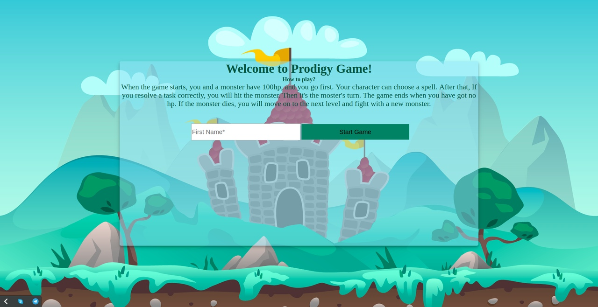
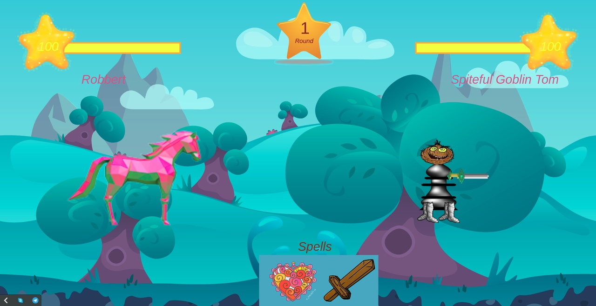
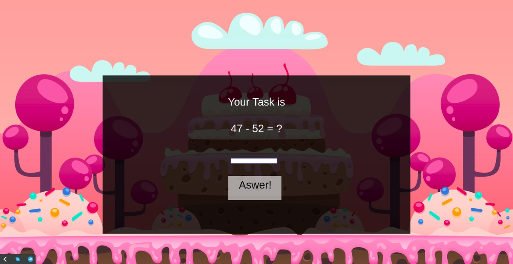
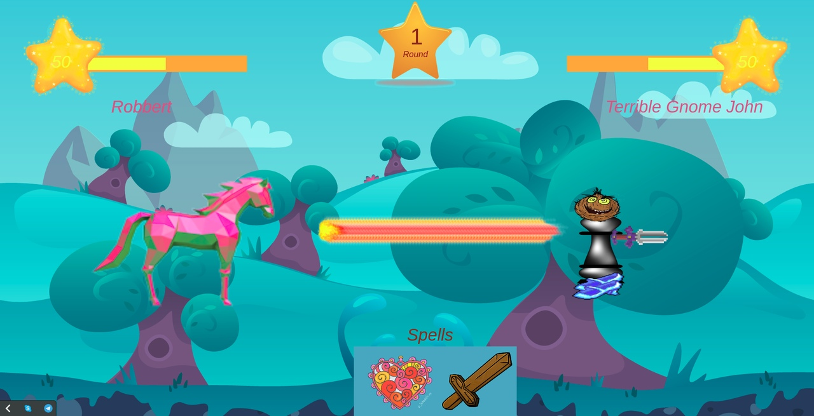
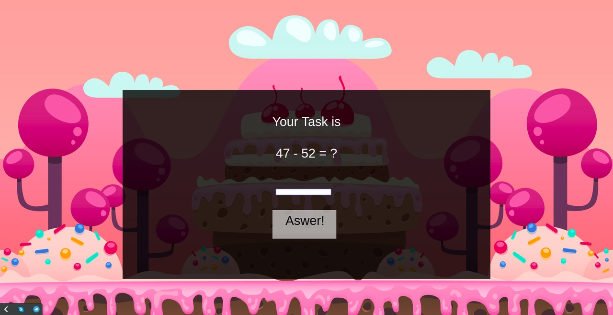
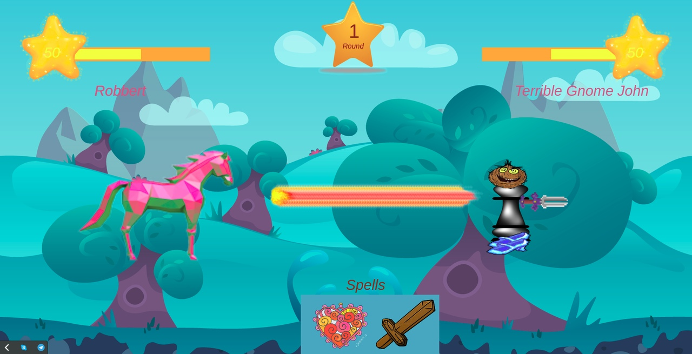
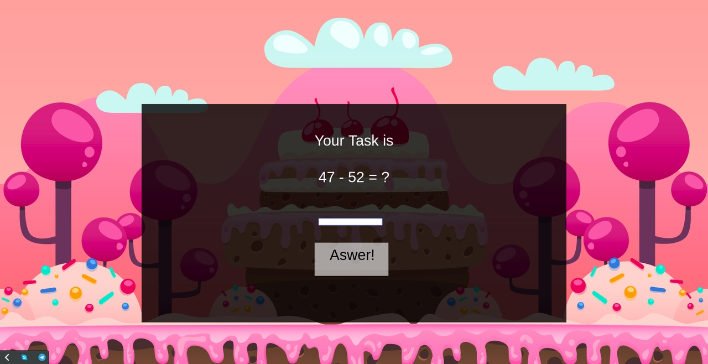
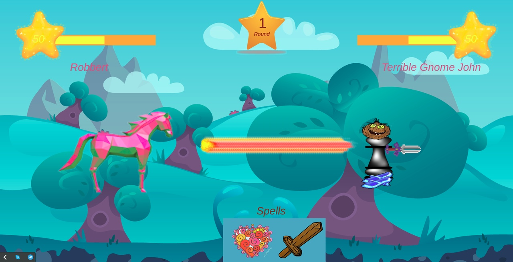

Authors: Julia Margun, Natasha Borodyuk, Computer Systems and Networks Faculty, BSUIR, the second-year students
SCREENSHOTS
You can see how ProdigyGameClone looks like.


 





Julia:
Create and animate the main character; create task screen, where the fisrt task is to solve an example, the second screen is for translating randomly chosen word into Russian; create an observer to observe when the task has been resolved; create a results table to demonstrate top10 results; add burst and health audio; create rounds and hit logic.
Natasha:
Create health points, create and animate the monster; create burst and health animation; add welcome and highscore screen's style; edit a main character; create a dictionary; create styles for rounds; create the landing page.